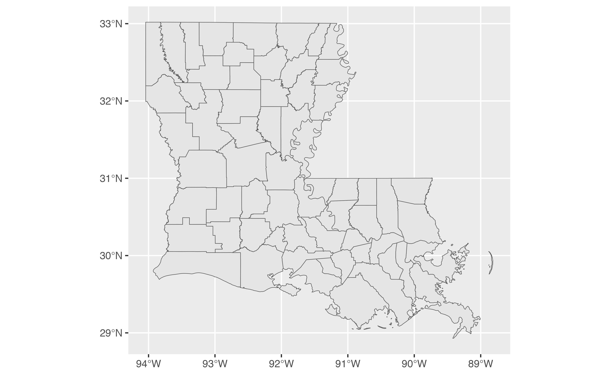

A package for Blanco Center staff
This package includes resources to help achieve a cohesive look for Blanco Center data visualizations. The main use of blancocentR is in conjunction with ggplot2, but colors can be used across other tools, and the included data can be useful for applications that don’t involve data visualizations.
The data
BlancocentR includes two data objects that should help working with
Louisiana’s 64 parishes and region designations by different state
agencies or other organizations: While the tibble parishes
includes the parishes and regions, louisiana is an sf
object which includes population estimates, geometry, and center points
for each parish in addition to what is included in
parishes.
You can access the data via blancocentR::parishes and
blancocentR::louisiana, or you can load them into your
environment. Let’s load both!
We can now plot a simple map of Louisiana with outlines for each parish.

We can use the ‘fill’ aesthetic to designate different regions, e.g., DCFS regions.

Getting region polygons
Sometimes it’s useful to not only have the parish polygons but also
region polygons. Maybe you’d like to map Louisiana’s parishes and show
region boundaries without using ‘fill’ for regions. Maybe you’d like to
plop each region’s name in the center of their area. We can do that
using get_region_geometry(). Let’s use DCFS regions again
for this example!
dcfs_regions <- get_region_geometry(louisiana, region_DCFS, region_name_DCFS)Our sf object has changed from 64 observations (one for each parish) to 9 observations (one for each DCFS region). Let’s plot a map!
p3 <- ggplot(dcfs_regions) +
geom_sf(data = louisiana) + # parish boundaries
geom_sf(lwd = 0.7, fill = NA) + # region boundaries
geom_sf_text(aes(label = region_name_DCFS)) # region namesThe theme
BlancocentR includes the Blanco Center theme,
theme_bc(). The theme defines the use of font families,
sizes, and colors for different aspects of the plot structure. The base
text is defined as using the sans serif font (“Quicksand”) in
size 12 and color light_text (“#575E66”). The plot
structure (e.g., axis lines, ticks, and text) all use the color
light_text as well, only titles (plot title, legend title,
and axis titles) are more emphasizes by using serif font
“Bitter” and the color dark_text. For extra emphasis and
ULL color branding, the plot title uses ull_red
(“#a00b0b”). The default position for the legend defined by this theme
is on top of the plot in a horizontal direction but that can be changed
as needed. You can customize the theme by changing its arguments.
Let’s create some additional example plots to use throughout this tutorial.
library(scales)
p4 <- ggplot(louisiana) +
geom_point(aes(x = estimate, y = region_name_DCFS, color = region_name_DCFS)) +
scale_x_continuous(labels = label_number(scale_cut = cut_short_scale())) +
labs(title = "Louisiana population in 2023",
subtitle = "Parish population by DCFS region",
caption = "Source: U.S. Census, 2023 ACS 5-Year estimates, Table B01003",
y = NULL,
x = NULL)Let’s see how plot p4 looks when we add our theme:
p4 +
theme_bc()
Grid lines
If you like, you can add grid lines. For p4, we can add x grid lines.
It wouldn’t make much sense to add y grid lines, but you can if you want
to using theme_bc(grid_y = TRUE).
p4 + labs(title = "Now with grid lines!") +
theme_bc(grid_x = TRUE) +
theme(legend.position = "none") # remove legend

The colors
This package includes several color palettes, list of named colors, and individual colors. Please note that accessing some of the colors may be different when you use this package from your experience sourcing colors from R scripts.
Palette functions
Palettes as functions can be used directly in your ggplot code using,
e.g. scale_color_manual() or
scale_fill_manual(), depending on how you mapped your
aesthetics.

This works because we mapped the color aesthetics to the variable
‘region_name_DCFS’ (as you can see in the legend title). Any region
color palette will assign the colors to the region name as opposed to
the region number by default. Let’s take a quick look at the variables
in dcfs_regions to understand the difference between
‘region_DCFS’ and ‘region_name_DCFS’.
library(dplyr)
#>
#> Attaching package: 'dplyr'
#> The following objects are masked from 'package:stats':
#>
#> filter, lag
#> The following objects are masked from 'package:base':
#>
#> intersect, setdiff, setequal, union
glimpse(dcfs_regions)
#> Rows: 9
#> Columns: 4
#> $ region_DCFS <dbl> 1, 2, 3, 4, 5, 6, 7, 8, 9
#> $ region_name_DCFS <chr> "Orleans", "Baton Rouge", "Covington", "Thibodaux", "…
#> $ geometry <GEOMETRY [°]> MULTIPOLYGON (((-89.95041 2..., POLYGON ((-91.17614 3…
#> $ center <POINT [°]> POINT (-89.73721 29.68826), POINT (-91.31832…If you prefer to map color to the region number instead, you’ll need
to convert the region’s numeric value to a discrete value (e.g., by
using factor()) and specify the use of region number rather
than region name inside dcfs_palette() via the ‘region’
argument. In this step, we can also darken the color for region 9 -
Monroe using the ‘darken’ argument.
ggplot(louisiana) +
geom_point(aes(x = estimate, y = region_name_DCFS, color = factor(region_DCFS))) +
scale_x_continuous(labels = label_number(scale_cut = cut_short_scale())) +
# scale_color_manual(values = dcfs_palette(region = "number", darken = 1)) +
labs(title = "Louisiana population in 2023",
subtitle = "Parish population by DCFS region",
caption = "Source: U.S. Census, 2023 ACS 5-Year estimates, Table B01003",
y = NULL,
x = NULL) +
theme_bc() +
theme(legend.position = "right")